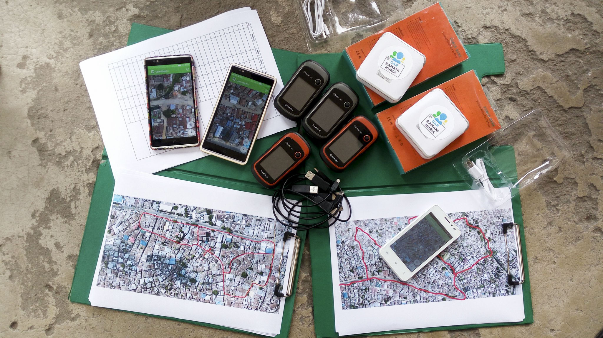

4.0 Field Mapping - Technical Set-up

Any field project will require some degree of Field Mapping Technical Set-Up regardless of the complexity of the data collection workflow. This section is designed to guide project managers and community members through the decision making process to determine what tools and steps are necessary for their specific project. Many technical guides exist on setting up and using specific tools such as OpenDataKit and POSM. To support project managers effectively, step-by-step guides are provided for some tools and processes where external documentation is lacking or HOT has previously created tailored materials. For tools and processes with quality guides and materials outside of HOT resources, external links have been provided.
- 4.1 Designing the Data Model covers the workflow and tools needed to develop a data model for OSM data collection.
- 4.2 Data Collection Applications provides guidance on selecting the appropriate data collection application for your project. Sub-pages also provide detailed instructions and resources on setting up specific tools such as ODK and OMK.
- 4.3 Navigation Applications provides an overview of navigation applications and how they can be used by project managers for their project.
- 4.4 Data Collection Servers provides guidance on determining if a server is necessary for your project and selecting the appropriate server for based on data and resource needs.
HOT presentations included in this section for use by communities and projects:
- Data Models and Tagging
- Introduction to Field Data Collection Applications
- Introduction to ODK
- Introduction to OMK